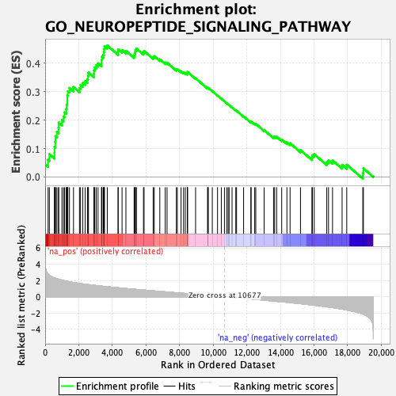
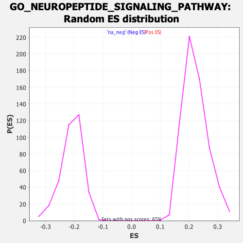

| | | Dataset | CK_basal |
| Phenotype | NoPhenotypeAvailable |
| Upregulated in class | na_pos |
| GeneSet | GO_NEUROPEPTIDE_SIGNALING_PATHWAY |
| Enrichment Score (ES) | 0.4626574 |
| Normalized Enrichment Score (NES) | 2.0897572 |
| Nominal p-value | 0.0 |
| FDR q-value | 0.015659628 |
| FWER p-Value | 0.211 |
Table: GSEA Results Summary

Fig 1: Enrichment plot: GO_NEUROPEPTIDE_SIGNALING_PATHWAY
Profile of the Running ES Score & Positions of GeneSet Members on the Rank Ordered List
| SYMBOL | RANK IN GENE LIST | RANK METRIC SCORE | RUNNING ES | CORE ENRICHMENT | | 1 | OPRD1 | 1 | 4.981 | 0.0443 | Yes |
| 2 | TENM1 | 176 | 2.787 | 0.0601 | Yes |
| 3 | PROKR2 | 250 | 2.651 | 0.0800 | Yes |
| 4 | SSTR1 | 557 | 2.317 | 0.0848 | Yes |
| 5 | NPPB | 560 | 2.315 | 0.1053 | Yes |
| 6 | NMUR2 | 604 | 2.283 | 0.1234 | Yes |
| 7 | NPBWR1 | 612 | 2.273 | 0.1433 | Yes |
| 8 | NTSR2 | 698 | 2.211 | 0.1586 | Yes |
| 9 | NXPH3 | 797 | 2.158 | 0.1728 | Yes |
| 10 | QRFPR | 808 | 2.154 | 0.1914 | Yes |
| 11 | UTS2R | 998 | 2.038 | 0.1998 | Yes |
| 12 | CARTPT | 1091 | 1.993 | 0.2128 | Yes |
| 13 | PYY | 1158 | 1.962 | 0.2269 | Yes |
| 14 | PENK | 1253 | 1.919 | 0.2391 | Yes |
| 15 | OPRL1 | 1278 | 1.908 | 0.2549 | Yes |
| 16 | NPS | 1320 | 1.890 | 0.2696 | Yes |
| 17 | ECEL1 | 1322 | 1.889 | 0.2864 | Yes |
| 18 | NMB | 1350 | 1.878 | 0.3017 | Yes |
| 19 | NPW | 1447 | 1.837 | 0.3131 | Yes |
| 20 | SSTR4 | 1687 | 1.747 | 0.3163 | Yes |
| 21 | RXFP4 | 2042 | 1.634 | 0.3127 | Yes |
| 22 | NPB | 2106 | 1.615 | 0.3238 | Yes |
| 23 | MCHR2 | 2242 | 1.570 | 0.3308 | Yes |
| 24 | PROK2 | 2383 | 1.538 | 0.3373 | Yes |
| 25 | UCN | 2517 | 1.500 | 0.3438 | Yes |
| 26 | SORCS1 | 2548 | 1.491 | 0.3555 | Yes |
| 27 | TYRO3 | 2578 | 1.484 | 0.3672 | Yes |
| 28 | SSTR5 | 2902 | 1.406 | 0.3631 | Yes |
| 29 | HCRTR1 | 2912 | 1.402 | 0.3751 | Yes |
| 30 | POMC | 2953 | 1.394 | 0.3855 | Yes |
| 31 | TAC3 | 3039 | 1.375 | 0.3933 | Yes |
| 32 | GPR139 | 3147 | 1.348 | 0.3998 | Yes |
| 33 | NPFFR1 | 3359 | 1.299 | 0.4005 | Yes |
| 34 | GPR143 | 3360 | 1.299 | 0.4121 | Yes |
| 35 | NPPA | 3383 | 1.293 | 0.4225 | Yes |
| 36 | PDYN | 3463 | 1.277 | 0.4298 | Yes |
| 37 | NMUR1 | 3496 | 1.270 | 0.4394 | Yes |
| 38 | GPR84 | 3504 | 1.269 | 0.4504 | Yes |
| 39 | GPR1 | 3530 | 1.265 | 0.4603 | Yes |
| 40 | AGRP | 3698 | 1.228 | 0.4627 | Yes |
| 41 | KISS1R | 4341 | 1.099 | 0.4394 | No |
| 42 | PROKR1 | 4344 | 1.097 | 0.4490 | No |
| 43 | OPRM1 | 4577 | 1.052 | 0.4465 | No |
| 44 | SSTR3 | 4806 | 1.002 | 0.4436 | No |
| 45 | HCRT | 5294 | 0.917 | 0.4267 | No |
| 46 | NPY | 5324 | 0.911 | 0.4333 | No |
| 47 | ADCYAP1 | 5359 | 0.905 | 0.4396 | No |
| 48 | PMCH | 5372 | 0.903 | 0.4471 | No |
| 49 | CYSLTR1 | 5434 | 0.892 | 0.4519 | No |
| 50 | MC2R | 5852 | 0.822 | 0.4377 | No |
| 51 | NMU | 5886 | 0.815 | 0.4433 | No |
| 52 | PNOC | 6427 | 0.718 | 0.4219 | No |
| 53 | SORL1 | 6492 | 0.707 | 0.4248 | No |
| 54 | NPY5R | 6822 | 0.654 | 0.4137 | No |
| 55 | TAC1 | 7145 | 0.598 | 0.4025 | No |
| 56 | GAL | 7254 | 0.576 | 0.4020 | No |
| 57 | LTB4R | 7808 | 0.483 | 0.3779 | No |
| 58 | GALR2 | 7864 | 0.474 | 0.3793 | No |
| 59 | GPR37 | 8087 | 0.438 | 0.3717 | No |
| 60 | GPR83 | 8236 | 0.415 | 0.3678 | No |
| 61 | NPY2R | 8340 | 0.398 | 0.3661 | No |
| 62 | GALP | 8457 | 0.376 | 0.3634 | No |
| 63 | HCRTR2 | 8467 | 0.374 | 0.3663 | No |
| 64 | NXPH2 | 8475 | 0.373 | 0.3692 | No |
| 65 | MCHR1 | 8952 | 0.293 | 0.3474 | No |
| 66 | NPFFR2 | 9664 | 0.175 | 0.3123 | No |
| 67 | NPSR1 | 9696 | 0.169 | 0.3122 | No |
| 68 | RXFP3 | 9701 | 0.168 | 0.3135 | No |
| 69 | GLRA2 | 9946 | 0.124 | 0.3020 | No |
| 70 | NPBWR2 | 10258 | 0.073 | 0.2867 | No |
| 71 | NPY1R | 10483 | 0.037 | 0.2755 | No |
| 72 | OPRK1 | 10670 | 0.001 | 0.2659 | No |
| 73 | NMS | 10805 | -0.024 | 0.2592 | No |
| 74 | NPVF | 10889 | -0.038 | 0.2553 | No |
| 75 | GRPR | 10946 | -0.048 | 0.2528 | No |
| 76 | PRLHR | 11122 | -0.076 | 0.2445 | No |
| 77 | GPR149 | 11344 | -0.116 | 0.2342 | No |
| 78 | GALR1 | 11390 | -0.125 | 0.2330 | No |
| 79 | GALR3 | 11809 | -0.195 | 0.2132 | No |
| 80 | PPY | 12245 | -0.274 | 0.1932 | No |
| 81 | CRCP | 12253 | -0.276 | 0.1953 | No |
| 82 | SORT1 | 12469 | -0.317 | 0.1871 | No |
| 83 | NXPH4 | 12533 | -0.329 | 0.1868 | No |
| 84 | PTH2 | 13030 | -0.424 | 0.1650 | No |
| 85 | GLRA3 | 13592 | -0.532 | 0.1409 | No |
| 86 | RAPGEF2 | 13656 | -0.543 | 0.1424 | No |
| 87 | GLRA1 | 13775 | -0.569 | 0.1414 | No |
| 88 | CYSLTR2 | 14077 | -0.625 | 0.1315 | No |
| 89 | SORCS2 | 14385 | -0.683 | 0.1218 | No |
| 90 | NTS | 14574 | -0.724 | 0.1185 | No |
| 91 | SSTR2 | 15194 | -0.854 | 0.0943 | No |
| 92 | NTSR1 | 15873 | -1.018 | 0.0684 | No |
| 93 | PTGDR2 | 15905 | -1.027 | 0.0760 | No |
| 94 | SORCS3 | 16012 | -1.052 | 0.0799 | No |
| 95 | GRP | 16758 | -1.240 | 0.0526 | No |
| 96 | QRFP | 16862 | -1.269 | 0.0586 | No |
| 97 | GLRB | 17101 | -1.338 | 0.0582 | No |
| 98 | CALCA | 17670 | -1.522 | 0.0425 | No |
| 99 | PCSK1N | 17947 | -1.631 | 0.0428 | No |
| 100 | SCG5 | 18901 | -2.133 | 0.0127 | No |
| 101 | CPE | 18939 | -2.166 | 0.0301 | No |
Table: GSEA details [plain text format]

Fig 2: GO_NEUROPEPTIDE_SIGNALING_PATHWAY: Random ES distribution
Gene set null distribution of ES for GO_NEUROPEPTIDE_SIGNALING_PATHWAY